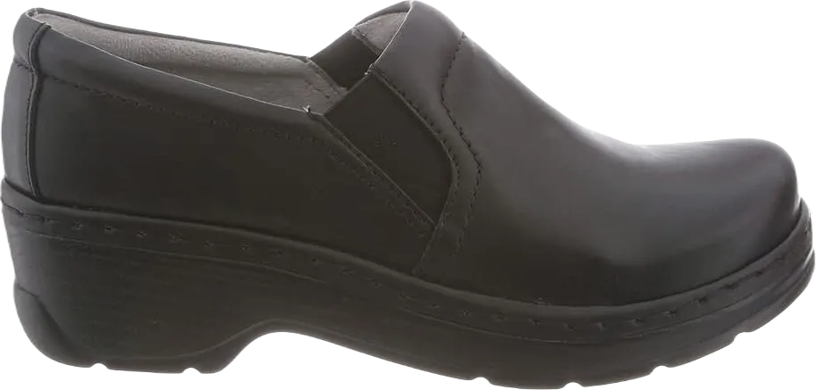

8 Best Walking Shoes for Ladies with Plantar Fasciitis 2024
Experiencing excessive foot pain, plantar fasciitis, or any form of heel discomfort can turn even a simple trip to the store into an unbearable task. Many individuals dealing with various foot issues often overlook the need for specific footwear that provides the necessary comfort and support. From daily visits to the rubbing area to using compression sleeves and orthotic inserts, many solutions may be appealing but can also be costly and typically need to be worn inside shoes. It’s time to reject these temporary fixes.
Instead, consider a more permanent solution that doesn't involve cramming your feet into uncomfortable shoes. Whether you prefer a light jog or an intense run, you should have footwear that suits your needs. So why not invest in a pair designed specifically for people like you? It’s time to prioritize comfort without compromising style or functionality.
-
#1
Orthofeet Lava consolation orthopedic
.webp)
For senior boys, taking a walk is a natural and reliable way to get from one place to another. However, if plantar fasciitis prevents you from moving freely, it can become incredibly frustrating. Fortunately, Orthofeet luxury shoes are designed to provide the necessary support and comfort.
Featuring exceptional arch support, these shoes are among the best options for individuals with diabetes, arthritis, and plantar fasciitis. They boast high-quality synthetic material, complete with a cushioned collar that enhances comfort and stability. Additionally, the open-toe design allows for unrestricted movement, ensuring your feet can breathe.
To top it all off, the interior is lined with breathable fabric that effectively wicks away moisture. With a well-cushioned footbed, you can walk all day without experiencing fatigue or pain. The modern design not only keeps your feet comfortable but also promotes proper movement, alleviating pressure on your knees and providing a smooth walking experience. -
#2
Tissue Orthofeet Coral
When dealing with plantar fasciitis, diabetic feet, and various foot-related issues, Orthofeet Orthopedic shoes offer a reliable solution. These shoes are designed to provide the ultimate comfort and support, making them an essential choice for women seeking relief. With their well-crafted design, they feature excellent arch support that helps alleviate sore feet.
One standout feature is the cleverly engineered gel cushioning, which molds to your feet for enhanced comfort and reduces heel pain that can radiate to your legs, knees, and back. Additionally, these shoes are lightweight, promoting ease of movement without adding unnecessary strain.
Their non-binding, high-strength design also serves as a beneficial accessory, providing relief for bunions and hammer toes. To combat heat and moisture that can cause discomfort, Orthofeet Coral Orthopedic shoes incorporate breathable mesh that helps keep your feet dry and odor-free throughout the day. -
#3
The Vionic’s Walker Boys
.webp)
Is taking a journey becoming increasingly difficult despite having the right support for the day? Do you often feel the urge to sit down and rest your feet after just a few steps? What you need are Vionic Walker shoes, designed to redefine your experience with a remarkable arch support structure. From the outside, these sneakers have a classic appearance that features durable materials and strong leather accents.
If you’re not fond of typical athletic shoes, this standout option is crafted by podiatrists and includes specialized biomechanical orthotics that can be easily removed. This means you can customize the fit according to your comfort needs.
Moreover, these orthotics are treated with antibacterial properties, ensuring optimal hygiene for your feet. As with any well-made product, you can trust that these shoes will help support your claims of comfort and stability throughout your day. -
#4
Saucony Grid Omni
.webp)
The Amazon review score isn’t solely about your feet or aesthetics; it encompasses much more than that. Now, you can showcase your masculinity with the renowned Saucony Grid Omni shoes. Featuring a durable leather sole, this athletic shoe incorporates advanced grid system technology that envelops your foot with each step you take.
Designed for the most sensitive feet, Saucony Grid Omni shoes provide mid-range support to absorb impacts and ensure comfort throughout your journey. The XT-900™ outsole is exceptionally sturdy and resilient, while a well-fitting heel strap reduces heel strikes and offers a secure fit.
Considering that these shoes meet the SADMERC standards at the first level, you can trust in their quality and performance. Equip yourself with these shoes to combat plantar fasciitis and heel pain, making them the ultimate choice for comfort. -
#5
Avery Island Orthofeet
Orthofeet has developed a robust design incorporating biomechanical principles to create a comfort closure with supportive features. For men, traveling should be a straightforward and reliable experience. However, if you struggle to reach your destination due to plantar fasciitis, it can significantly limit your mobility. Thankfully, Orthofeet Avery Island shoes offer a new level of comfort and support that can transform your daily activities.
Equipped with a well-designed anatomical arch support and targeted cushioning in key pressure points, these shoes are incredibly versatile. They are specifically designed to help you stay on your feet all day without discomfort. Individuals with diabetes, arthritis, and plantar fasciitis often experience swelling in their feet and require more room than average footwear provides.
The deep toe box design allows your feet to relax and spread out, ensuring genuine comfort. This thoughtful feature makes these shoes an excellent choice for anyone needing extra space and support throughout their day. -
#6
Klogs united states of usa INAPLES
Klogs footwear is among the most recognized brands catering to individuals seeking comfort throughout their daily activities. You no longer have to endure a difficult day or a long journey without the soothing support that your feet deserve. For those grappling with various foot issues, the Klogs NAPLES Mule offers a haven of relief.
These versatile shoes feature anti-slip sleeves and customizable insoles, allowing women around the world to adapt their orthotics for optimal support. If you suffer from plantar fasciitis, you’re likely familiar with the discomfort of wearing the wrong shoes. The NAPLES Mule is designed to provide excellent arch support and a well-crafted footbed.
With this thoughtful design, you can enjoy both style and comfort, forgetting about the fatigue and pain often associated with long hours on your feet. The NAPLES Mule allows you to move freely while ensuring your feet are well taken care of, making it an essential choice for comfort and support. -
#7
OOFOS Unisex OOcloog Clog
.webp)
If there were ever a high-heeled shoe designed for recovery or for those with foot injuries, it would undoubtedly be the OOFOS Unisex OOcloog Clog. This footwear stands out as one of the softest, most comfortable options available in the market. Runners, in particular, will find this clog incredibly beneficial. Unlike traditional shoes that can hinder recovery during physical activities, this design takes a different approach.
Thanks to its innovative OOfoam technology, the OOcloog is exceptionally comfortable and provides a remarkable 37% impact absorption, reducing stress on your feet. This feature is especially helpful for individuals suffering from plantar fasciitis, allowing for a smoother recovery process.
Whether you’re on your feet all day at work or simply moving around, this professional shoe is engineered to alleviate pressure and pain, making it an excellent choice for anyone looking to unwind after a demanding day. With the OOFOS OOcloog, you can enjoy the relief and comfort your feet truly deserve. -
#8
Pesca Shoe for girls in Alegria
The Alegria Pesca footwear is the perfect representation of modern women—active, hardworking, and determined. This shoe combines both functionality and elegance, making it ideal for women who juggle multiple roles but still want to stay comfortable and stylish. With a fisherman sandal-inspired design, the Alegria Pesca stands out as a unique, thoughtful creation tailored to fit the natural contours of a woman’s foot.
Designed with breathability in mind, these shoes keep your feet cool during long hours of activity, making them perfect for work or casual outings. Whether you’re walking through a busy salon or taking a break outdoors, the shoe’s stylish and practical design ensures both comfort and a professional look.
Beyond just its aesthetic appeal, the Alegria Pesca shoe offers a seamless blend of fashion and functionality, making it versatile enough for various settings. It complements both your active lifestyle and the need to maintain a polished, professional appearance. With these shoes, you can stay on top of your game in comfort and style.